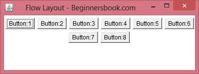
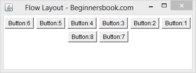
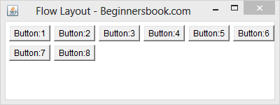
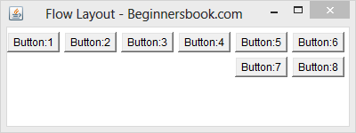

Flow layout is the default layout, which means if you don’t set any layout in your code then layout would be set to Flow by default. Flow layout puts components (such as text fields, buttons, labels etc) in a row, if horizontal space is not enough to hold all components then Flow layout adds them in a next row and so on.
Example: Here is the image of a Frame where eight buttons have been added to a Frame under Flow layout. As you can see buttons 7 & 8 are in second row because first six buttons consumed all horizontal space.

Points to Note:
- All rows in Flow layout are center aligned by default. As you can see in the above image that buttons 7 & 8 are in center. However we can set the alignment to left or right, we will learn about it later in this post.
- The default horizontal and vertical gap between components is 5 pixels.
- By default the components Orientation is left to right, which means the components would be added from left to right, however we can change it to right to left as well, we will see that later in this post.
Simple Flow Layout Example
The image shown above is the output of this code. Here we are adding 8 buttons to a Frame and layout is being set to FlowLayout.
import java.awt.*;
public class FlowLayoutDemo extends Frame{
// constructor
public FlowLayoutDemo(String title)
{
/* It would create the Frame by calling
* the constructor of Frame class.
*/
super(title);
//Setting up Flow Layout
setLayout(new FlowLayout());
//Creating a button and adding it to the frame
Button b1 = new Button("Button:1");
add(b1);
/* Adding other components to the Frame
*/
Button b2 = new Button("Button:2");
add(b2);
Button b3 = new Button("Button:3");
add(b3);
Button b4 = new Button("Button:4");
add(b4);
Button b5 = new Button("Button:5");
add(b5);
Button b6 = new Button("Button:6");
add(b6);
Button b7 = new Button("Button:7");
add(b7);
Button b8 = new Button("Button:8");
add(b8);
}
public static void main(String[] args)
{ FlowLayoutDemo screen =
new FlowLayoutDemo("Flow Layout - Beginnersbook.com");
screen.setSize(400,150);
screen.setVisible(true);
}
}
Flow Layout where Orientation is right to left
The default Orientation for flow layout is left to right, however we can set it to right to left if want.
import java.awt.*;
public class FlowLayoutDemo extends Frame{
// constructor
public FlowLayoutDemo(String title)
{
/* It would create the Frame by calling
* the constructor of Frame class.
*/
super(title);
//Setting up Flow Layout
setLayout(new FlowLayout());
//Creating a button and adding it to the frame
Button b1 = new Button("Button:1");
add(b1);
/* Adding other components to the Frame
*/
Button b2 = new Button("Button:2");
add(b2);
Button b3 = new Button("Button:3");
add(b3);
Button b4 = new Button("Button:4");
add(b4);
Button b5 = new Button("Button:5");
add(b5);
Button b6 = new Button("Button:6");
add(b6);
Button b7 = new Button("Button:7");
add(b7);
Button b8 = new Button("Button:8");
add(b8);
/* This would set the Orientation to
* RightToLeft
*/
setComponentOrientation(
ComponentOrientation.RIGHT_TO_LEFT);
}
public static void main(String[] args)
{ FlowLayoutDemo screen =
new FlowLayoutDemo("Flow Layout - Beginnersbook.com");
screen.setSize(400,150);
screen.setVisible(true);
}
}
Output:

Left alignment of components in FlowLayout
As we have seen in the examples above that the rows are center aligned (look at the buttons 7 & 8 in the image above). However we can change the alignment by passing the parameters to the constructor of flow layout while setting up the layout.
To change the alignment to Left, replace the statement setLayout(new FlowLayout()); with this one: setLayout(new FlowLayout(FlowLayout.LEFT)); in the example 1. The output would look like the image below –

Right alignment of components in FlowLayout
To change the alignment to Right, replace the statement setLayout(new FlowLayout()); with this one: setLayout(new FlowLayout(FlowLayout.RIGHT)); in the example 1. The output would look like the image below –

Leave a Reply